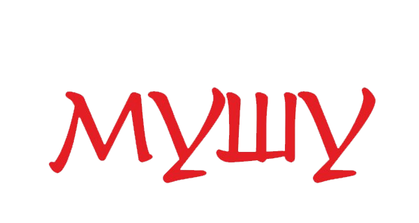

<div class="fullBlock" id="veryFirst">
	<div class="social-icons">
		<a href="https://vk.com/mushudd" id="vk"></a>
		<a href="https://www.instagram.com/mushudd/?hl=ru" id="insta"></a>
	</div>
	<div id="videoFrame" style="">
		<!-- <iframe src="" width="100%" height="100%" autoplay=1 frameborder="0" allowfullscreen></iframe> -->
		<video id="video" autoplay="1" muted="muted" preload="auto">
			<source src="../assets/mushu-muted.mp4" type="video/mp4">
		</video>
	</div>
	<div class="shadow"></div>
	<div class="reservation-btn">
		<app-modal-reserve></app-modal-reserve>
	</div>
	<div class="callback-btn">
		<app-modal-callback></app-modal-callback>
	</div>
	
	<a href="#" (click)="vidSwap('../assets/mushu-muted.mp4'); $event.stopPropagation();" id="reloadVideo"></a>
</div>
<a [href]="externalPath" class="restaurant-menu">
	<h2>Просмотреть меню</h2>
</a>
<div class="events-chooser">
	<app-events-chooser></app-events-chooser>
</div>
<div class="photos-carousel">
	<app-photos-carousel></app-photos-carousel>	
</div>
<ya-map [latitude]="54.233023077740086" [longitude]="49.55170694673536" [zoom]="16" [controls]="[]">
	<ya-marker [latitude]="54.23248174954702" [longitude]="49.55498728836056" [balloonContentHeader]=[balloonHeader] ></ya-marker>
</ya-map>


